Application of `limpca` on the UCH metabolomics dataset.
Benaiche Nadia, Sébastien Franceschini, Martin Manon, Thiel Michel, Govaerts Bernadette
February 16, 2024
Source:vignettes/UCH.Rmd
UCH.Rmd
if (!requireNamespace('pander', quietly = TRUE))
stop("Install 'pander' to knit this vignette")
library(pander)
library(ggplot2)
if (!requireNamespace('gridExtra', quietly = TRUE))
stop("Install 'pander' to knit this vignette")
library(gridExtra)Introduction
The purpose of this vignette is to show the possibilities offered by
the limpca package.
limpca stands for linear modeling of high-dimensional
designed data based on ASCA/APCA family of methods. This package was
created to analyse models with high-dimensional data and a multi-factor
design of experiment and provides an implementation of ASCA and APCA
derived methods.
The model used in this example is a three-way ANOVA with fixed effects. This document presents all the usual steps of the analysis, from importing the data to visualising the results. Details on the methods used and the package implementation can be found in the articles of Thiel, Feraud, and Govaerts (2017), Guisset, Martin, and Govaerts (2019) and Thiel et al. (2023).
The motivation of publishing limpca in
bioconductor is twofold. First, no
bioconductor package includes ASCA/APCA methods and other
R packages implementing them are very basic as explained in
the literature review of Thiel et al.
(2023). Secondly, ASCA/APCA are highly informative methods to
analyse -omics data tables in a multivariate framework as a complement
to differential analyses packages like limma.
Installation
The package is actually in its development stage and is available on
GitHub: https://github.com/ManonMartin/limpca. It can be
installed via the remotes::install_github function. The
package needs to be loaded afterwards.
if (!requireNamespace("remotes"))
install.packages(pkgs="remotes", dependencies=TRUE)
remotes::install_github("ManonMartin/limpca",
dependencies = TRUE)Note that if you would like to build the vignettes, you have to
install BiocStyle (from Bioconductor) and
rmarkdown packages before installing limpca
with the following command:
remotes::install_github("ManonMartin/limpca", dependencies = TRUE,
build_vignettes = TRUE)Data importation
Before any analysis, the UCH data set needs to be
loaded. The limpca package contains the data set and it can
be loaded with the data function. The load
function is also useful to import your own data in an R format.
data("UCH")Data exploration
The UCH (Urine-Citrate-Hippurate) data set is described in Thiel, Feraud, and Govaerts (2017) and Guisset, Martin, and Govaerts (2019) and is issued form a metabolomics experiment. In this experiment, 36 samples of a pool of rat urine samples were spiked with two molecules Citrate and Hippurate according to a \(3^2\) full factorial design in the quantities of these two molecules. The spiked samples were analyzed by 1H NMR at two different time after defrozing and over two different days. Two of the spectra where finally missing at the end of the experiment.
The UCH data set is a list containing 2 elements:
- an
outcomesmatrix with 34 observations of 600 response variables representing the spectra from the 1H NMR spectroscopy, - a
designmatrix with 34 observations and 4 explanatory variables
A formula with the general linear model to be estimated
will be added to this list below.
For the purpose of this example, only 3 factors of interest will be studied : concentrations of Hippurate and Citrate and Time after defrozing.
Here are the limpca functions that are available for
data exploration.

limpca data exploration functions
Design
The design matrix contains the information about each observation for
the four variables: Hippurate, Citrate, Day and Time. Only 3 of these
variables are used in the model. The function plotDesign is
useful to visualise the design.
| Hippurate | Citrate | Dilution | Day | Time | |
|---|---|---|---|---|---|
| M2C00D2R1 | 0 | 0 | diluted | 2 | 1 |
| M2C00D2R2 | 0 | 0 | diluted | 2 | 2 |
| M2C02D2R1 | 0 | 2 | diluted | 2 | 1 |
| M2C02D2R2 | 0 | 2 | diluted | 2 | 2 |
| M2C04D2R1 | 0 | 4 | diluted | 2 | 1 |
| M2C04D2R2 | 0 | 4 | diluted | 2 | 2 |
plotDesign(design = UCH$design, x = "Hippurate",
y = "Citrate", rows = "Time",
title = "Design of the UCH dataset")
This plot confirms that the design is a full 3x3x2 factorial design replicated twice with 2 missing values. Hence, the design is not balanced.
Outcomes visualization
The 600 response (outcomes) variables represent, for
each observation, the intensities of the 1H NMR spectra.
These spectra can be visualized by the plotLine
function.
plotLine function
Here, annotations (cit_peaks and hip_peaks)
are added to the ggplot objects in order to highlight the
Hippurate (green) and Citrate (red) peaks.
p1 <- plotLine(Y = UCH$outcomes,
title = "H-NMR spectrum",
rows = c(3),
xlab = "ppm",
ylab = "Intensity")
cit_peaks <- annotate("rect", xmin=c(2.509), xmax=c(2.709),
ymin=-Inf, ymax=Inf, alpha=0.2,
fill=c("tomato"))
hip_peaks <- annotate("rect", xmin=c(7.458,3.881), xmax=c(7.935,4.041),
ymin=-Inf, ymax=Inf, alpha=0.2,
fill=c("yellowgreen"))
p1 <- plotLine(Y = UCH$outcomes,
title = "H-NMR spectrum",
rows = c(3),
xlab = "ppm",
ylab = "Intensity")
p1 + cit_peaks + hip_peaks
plotScatter function
The plotScatter function enables to visualize the values
of two outcomes variables with different colors or markers for the
values of the design factors. Here, it is used to show that the \(3^2\) factorial design can be recovered
from the intensities of the Hippurate and Citrate peaks in the
spectra.
# xy corresponds to citrate (453) and hippurate peaks (369)
plotScatter(Y = UCH$outcomes,
xy = c(453, 369),
design = UCH$design,
color = "Hippurate",
shape = "Citrate")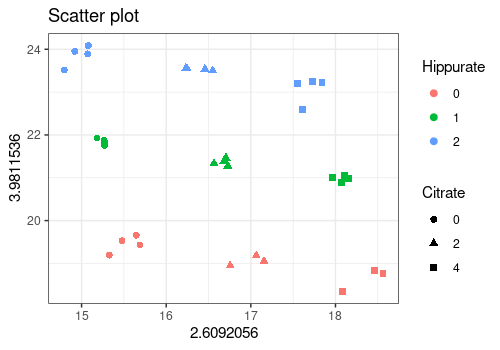
# Or refering to the variables names (ppm values here)
plotScatter(Y = UCH$outcomes,
xy = c("2.6092056","3.9811536"),
design = UCH$design,
color = "Hippurate",
shape = "Citrate")
plotScatterM function
The plotScatter function allows to visualize the values
of a series of outcomes variables with different colors or markers for
the values of the design factors. Here, it is done for the 4 peaks of
Hippurate and single peak of Citrate.
plotScatterM(Y = UCH$outcomes, cols = c(133, 145, 150, 369, 453),
design = UCH$design,varname.colorup = "Hippurate",
varname.colordown = "Citrate")
plotMeans function
The plotMeans represents the mean values of a response
variable for different levels of the design factors. Here we show the
evolution of the Citrate peak height with respect to the three design
factors of interest. Note that the results of this function must be
interpreted with caution for unbalanced designs because simple means are
biased estimators of expected means.
plotMeans(Y = UCH$outcomes,
design = UCH$design,
cols = c(453),
x = c("Citrate"),
w = c("Hippurate"),
z = c("Time"),
ylab = "Intensity",
title=c("Mean reponse for main Citrate peak"))$`2.6092056`
PCA
The function pcaBySvd is useful to compute a Principal
Component Analysis (PCA) decomposition of the outcomes
matrix. Several functions can be applied to the output value of
pcaBySvd:
-
pcaScreePlotto obtaine a scree plot -
pcaLoading1dPlotfor the loading plots -
pcaScorePlotfor the score plots
ResPCA = pcaBySvd(UCH$outcomes)
pcaScreePlot(ResPCA, nPC = 6) 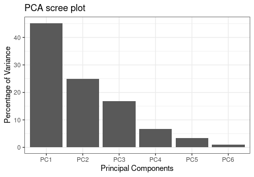
The score plots below indicate that all tree factors from the design affect the spectral profiles, which will be more clearly highlighted by ASCA and APCA.
pcaScorePlot(resPcaBySvd = ResPCA, axes = c(1,2),
title = "PCA scores plot: PC1 and PC2",
design = UCH$design,
color = "Hippurate", shape = "Citrate",
points_labs_rn = FALSE)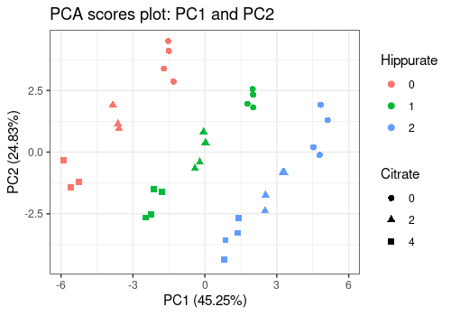
pcaScorePlot(resPcaBySvd = ResPCA, axes = c(1,2),
title = "PCA scores plot: PC1 and PC2",
design = UCH$design,
color = "Time", shape = "Hippurate",
points_labs_rn = FALSE)
pcaScorePlot(resPcaBySvd = ResPCA, axes = c(3,4),
title = "PCA scores plot: PC3 and PC4",
design = UCH$design,
color = "Time", shape = "Citrate",
points_labs_rn = FALSE)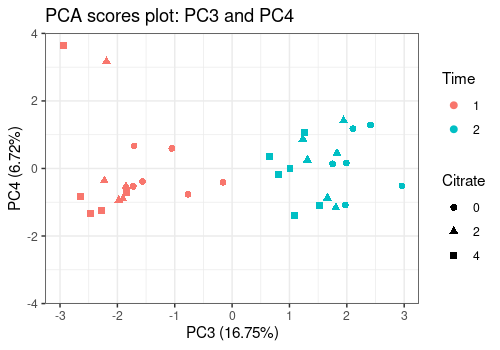
In the first two loading plots, a mixture of Citrate and Hippurate peaks already appears but they are not separated.
p2 <- pcaLoading1dPlot(resPcaBySvd = ResPCA, axes = c(1,2),
title = "PCA loadings plot UCH", xlab = "ppm",
ylab = "Intensity")
p2 + hip_peaks + cit_peaks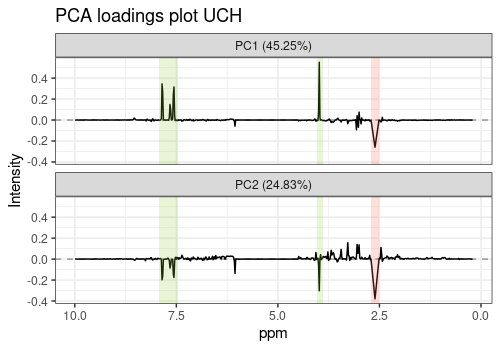
Application of ASCA+ and APCA+
Here below, ASCA+ and APCA+ steps are illustrated on the
UCH data set. The following graph represents the steps of
the methodology.
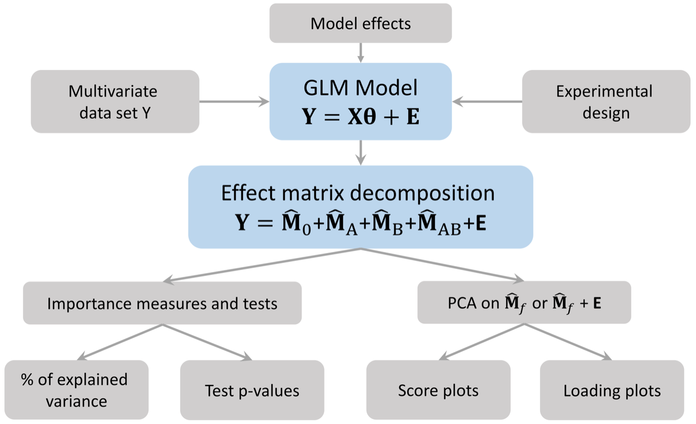 The next graph presents the functions
available in limpca for this purpose. They are all
illustrated in the next sections.
limpca ASCA/APCA functions
Model estimation and effect matrix decomposition
Model formula
The formula of the ANOVA-GLM model used in this analysis is the 3 ways crossed ANOVA model:
UCH$formula <- "outcomes ~ Hippurate + Citrate + Time + Hippurate:Citrate +
Time:Hippurate + Time:Citrate + Hippurate:Citrate:Time"Model matrix generation
The first step of ASCA+ is to build the (GLM) model matrix from the
experimental design matrix and the model. Each factor is reencoded with
multiple binary variables using contr.sum coding. The size
of the model matrix is 34xp with p being the total number of parameters
in the ANOVA model for one response.
The function lmpModelMatrix encodes the design matrix as
a model matrix.
resLmpModelMatrix = lmpModelMatrix(UCH)
pander::pander(head(resLmpModelMatrix$modelMatrix))| (Intercept) | Hippurate1 | Hippurate2 | Citrate1 | Citrate2 | |
|---|---|---|---|---|---|
| M2C00D2R1 | 1 | 1 | 0 | 1 | 0 |
| M2C00D2R2 | 1 | 1 | 0 | 1 | 0 |
| M2C02D2R1 | 1 | 1 | 0 | 0 | 1 |
| M2C02D2R2 | 1 | 1 | 0 | 0 | 1 |
| M2C04D2R1 | 1 | 1 | 0 | -1 | -1 |
| M2C04D2R2 | 1 | 1 | 0 | -1 | -1 |
| Time1 | Hippurate1:Citrate1 | Hippurate2:Citrate1 | |
|---|---|---|---|
| M2C00D2R1 | 1 | 1 | 0 |
| M2C00D2R2 | -1 | 1 | 0 |
| M2C02D2R1 | 1 | 0 | 0 |
| M2C02D2R2 | -1 | 0 | 0 |
| M2C04D2R1 | 1 | -1 | 0 |
| M2C04D2R2 | -1 | -1 | 0 |
| Hippurate1:Citrate2 | Hippurate2:Citrate2 | Hippurate1:Time1 | |
|---|---|---|---|
| M2C00D2R1 | 0 | 0 | 1 |
| M2C00D2R2 | 0 | 0 | -1 |
| M2C02D2R1 | 1 | 0 | 1 |
| M2C02D2R2 | 1 | 0 | -1 |
| M2C04D2R1 | -1 | 0 | 1 |
| M2C04D2R2 | -1 | 0 | -1 |
| Hippurate2:Time1 | Citrate1:Time1 | Citrate2:Time1 | |
|---|---|---|---|
| M2C00D2R1 | 0 | 1 | 0 |
| M2C00D2R2 | 0 | -1 | 0 |
| M2C02D2R1 | 0 | 0 | 1 |
| M2C02D2R2 | 0 | 0 | -1 |
| M2C04D2R1 | 0 | -1 | -1 |
| M2C04D2R2 | 0 | 1 | 1 |
| Hippurate1:Citrate1:Time1 | Hippurate2:Citrate1:Time1 | |
|---|---|---|
| M2C00D2R1 | 1 | 0 |
| M2C00D2R2 | -1 | 0 |
| M2C02D2R1 | 0 | 0 |
| M2C02D2R2 | 0 | 0 |
| M2C04D2R1 | -1 | 0 |
| M2C04D2R2 | 1 | 0 |
| Hippurate1:Citrate2:Time1 | Hippurate2:Citrate2:Time1 | |
|---|---|---|
| M2C00D2R1 | 0 | 0 |
| M2C00D2R2 | 0 | 0 |
| M2C02D2R1 | 1 | 0 |
| M2C02D2R2 | -1 | 0 |
| M2C04D2R1 | -1 | 0 |
| M2C04D2R2 | 1 | 0 |
Model estimation and effect matrices decomposition
lmpEffectMatrices is the used to estimate the linear
model and decomposes the multivariate outcomes into effect matrices for
every model term. This function calculates also type III effect
contributions (in %) and generates a barpot to visualise
these contributions.
resLmpEffectMatrices = lmpEffectMatrices(resLmpModelMatrix)Effects importance
The contributions from each effect is outputted from
lmpEffectMatrices.
pander(resLmpEffectMatrices$variationPercentages)| Hippurate | Citrate | Time | Hippurate:Citrate | Hippurate:Time |
|---|---|---|---|---|
| 39.31 | 29.91 | 16.24 | 1.543 | 6.229 |
| Citrate:Time | Hippurate:Citrate:Time | Residuals |
|---|---|---|
| 0.5387 | 1.684 | 4.298 |
resLmpEffectMatrices$varPercentagesPlot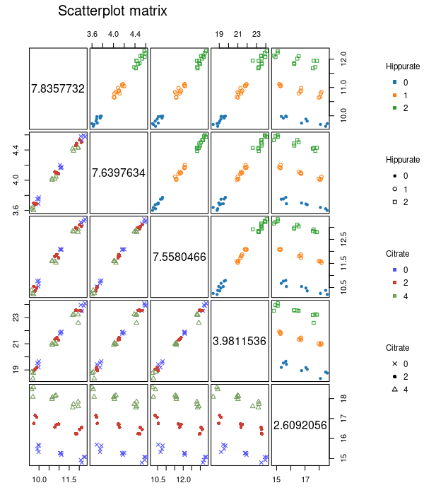
Bootstrap tests and quantification of effects importance
lmpBootstrapTests applies a parametric bootstrap test to
determine whether an effect is significant or not. We recommend the user
to choose first a small value of nboot (e.g. nboot=100) to
develop its code and increase it later on (e.g. nboot=1000) in order to
get an accurate value for the p-values.
resLmpBootstrapTests =
lmpBootstrapTests(resLmpEffectMatrices = resLmpEffectMatrices,
nboot=100)
# Print P-values
pander::pander(t(resLmpBootstrapTests$resultsTable))| Hippurate | Citrate | Time | Hippurate:Citrate | |
|---|---|---|---|---|
| % of variance (T III) | 39.31 | 29.91 | 16.24 | 1.54 |
| Bootstrap p-values | < 0.01 | < 0.01 | < 0.01 | 0.15 |
| Hippurate:Time | Citrate:Time | |
|---|---|---|
| % of variance (T III) | 6.23 | 0.54 |
| Bootstrap p-values | < 0.01 | 0.4 |
| Hippurate:Citrate:Time | Residuals | |
|---|---|---|
| % of variance (T III) | 1.68 | 4.30 |
| Bootstrap p-values | 0.09 | - |
ASCA/APCA/ASCA-E decomposition
The ASCA/APCA/ASCA-E decomposition enables to represent the
information from the effect matrices in a space of reduced dimension
through PCA. The function lmpPcaEffects has a method
argument to define which method to use, namely ASCA,
APCA or ASCA-E. Combined effects matrices can
also be built and visualized by PCA.
ASCA
The ASCA method performs PCA on the pure effect matrices. Here a
combined effect matrix Hippurate+Time+Hippurate:Time is
also built.
resASCA = lmpPcaEffects(resLmpEffectMatrices = resLmpEffectMatrices,
method="ASCA",
combineEffects = list(c("Hippurate", "Time",
"Hippurate:Time")))Contributions
The contribution of each principal component of the effects is
calculated and reported in different tables and plots with the function
lmpContributions.
resLmpContributions = lmpContributions(resASCA)The tables are:
-
totalContribTable: Table of the contribution of each effect to the total variance in percentage as outputted fromlmpEffectMatrices.
pander::pander(resLmpContributions$totalContribTable)| Percentage of Variance | |
|---|---|
| Hippurate | 39.31 |
| Citrate | 29.91 |
| Time | 16.24 |
| Hippurate:Citrate | 1.54 |
| Hippurate:Time | 6.23 |
| Citrate:Time | 0.54 |
| Hippurate:Citrate:Time | 1.68 |
| Residuals | 4.3 |
-
effectTable: Table of the percentage of variance explained by each Principal Component in each model effect decomposition.
pander::pander(resLmpContributions$effectTable)| PC1 | PC2 | PC3 | PC4 | PC5 | Sum | |
|---|---|---|---|---|---|---|
| Hippurate | 97.71 | 2.29 | 0 | 0 | 0 | 100 |
| Citrate | 98.22 | 1.78 | 0 | 0 | 0 | 100 |
| Time | 100 | 0 | 0 | 0 | 0 | 100 |
| Hippurate:Citrate | 44.01 | 38.51 | 15.13 | 2.34 | 0 | 99.99 |
| Hippurate:Time | 93.92 | 6.08 | 0 | 0 | 0 | 100 |
| Citrate:Time | 90.76 | 9.24 | 0 | 0 | 0 | 100 |
| Hippurate:Citrate:Time | 47.23 | 27.49 | 22.6 | 2.68 | 0 | 100 |
| Residuals | 48.54 | 16.9 | 10.28 | 5.93 | 4.32 | 85.97 |
-
combinedEffectTable: Equivalent of the previouseffectTablebut for the combination of effects mentioned inlmpPcaEffects, here forHippurate+Time+Hippurate:Time.
pander::pander(resLmpContributions$combinedEffectTable)| PC1 | PC2 | PC3 | PC4 | PC5 | Sum | |
|---|---|---|---|---|---|---|
| Hippurate+Time+Hippurate:Time | 62.95 | 26.32 | 10.09 | 0.48 | 0.17 | 100 |
| Residuals | 48.54 | 16.9 | 10.28 | 5.93 | 4.32 | 85.97 |
-
contribTable: Table of the percentage of variance explained by each Principal Component of each effect reported to the percentage contribution of the given effect to the total variance. This table gives an overview of the importance of each PC regardless of the effects.
pander::pander(resLmpContributions$contribTable)| PC1 | PC2 | PC3 | PC4 | PC5 | Contrib | |
|---|---|---|---|---|---|---|
| Hippurate | 38.41 | 0.9 | 0 | 0 | 0 | 39.31 |
| Citrate | 29.37 | 0.53 | 0 | 0 | 0 | 29.91 |
| Time | 16.24 | 0 | 0 | 0 | 0 | 16.24 |
| Hippurate:Citrate | 0.68 | 0.59 | 0.23 | 0.04 | 0 | 1.54 |
| Hippurate:Time | 5.85 | 0.38 | 0 | 0 | 0 | 6.23 |
| Citrate:Time | 0.49 | 0.05 | 0 | 0 | 0 | 0.54 |
| Hippurate:Citrate:Time | 0.8 | 0.46 | 0.38 | 0.05 | 0 | 1.68 |
| Residuals | 2.09 | 0.73 | 0.44 | 0.25 | 0.19 | 4.3 |
- Moreover
lmpContributionsalso produces a barplot either with the ordered contributions per effect (plotTotal) or across all the PCs of the different effects (plotContrib).
pander("Ordered contributions per effect:")Ordered contributions per effect:
resLmpContributions$plotTotal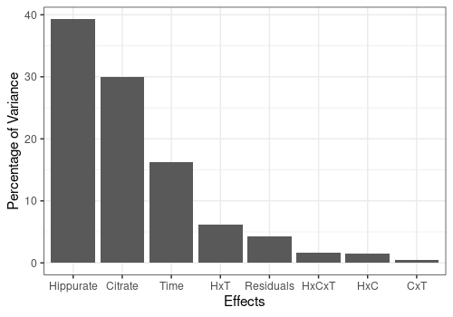
pander("For each PC of the different effects:")For each PC of the different effects:
resLmpContributions$plotContrib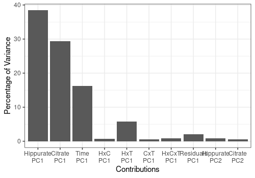
In the following analysis, we will focus only on the first PC of the
three main effects, the interaction Hippurate:Time and the
residuals since the other PCs and effects account for less than 1% of
the total variance.
Scores and loadings Plots
The loadings can be represented either on a line plot with the
function lmpLoading1dPlot to conveniently compare them with
the original spectral profiles or on a scatterplot with the function
lmpLoading2dPlot.
Here we create an object including the loading plots (as line plots) for all the effects included in the model as well as the combined effect and the residuals.
all_loadings_pl <- lmpLoading1dPlot(resASCA,
effectNames = c("Hippurate", "Citrate","Time",
"Hippurate:Time",
"Hippurate+Time+Hippurate:Time",
"Residuals"),
axes = 1, xlab = "ppm")The score matrices are represented two components at a time on a
scatterplot with the function lmpScorePlot.
Main effects
The scores and loadings of the main effects included in the model are represented below.
They show that, thank to the ASCA analysis, Hippurate and Citrate
peaks are clearly and separately retrieved in the respective loading
plots compared to the classical PCA (see Section @ref(pca)) where peaks
of these two chemicals are both present in the two first PCs. The
loading profile of the Time effect shows a high peak on the
left side of the removed water area.
# Hippurate
hip_scores_pl <- lmpScorePlot(resASCA, effectNames = "Hippurate",
color = "Hippurate", shape = "Hippurate")
hip_loadings_pl <- all_loadings_pl$Hippurate + hip_peaks
grid.arrange(hip_scores_pl,hip_loadings_pl, ncol=2)
# Citrate
cit_scores_pl <- lmpScorePlot(resASCA, effectNames = "Citrate",
color = "Citrate", shape = "Citrate")
cit_loadings_pl <- all_loadings_pl$Citrate + cit_peaks
grid.arrange(cit_scores_pl,cit_loadings_pl, ncol=2)
# Time
tim_scores_pl <- lmpScorePlot(resASCA, effectNames = "Time", color = "Time",
shape = "Time")Warning in FUN(X[[i]], ...): The variance of PC2 is inferior to 1%. Graph
scaled
time_peaks <- annotate("rect", xmin=c(5.955364), xmax=c(6.155364),
ymin=-Inf, ymax=Inf, alpha=0.2,
fill=c("royalblue"))
tim_loadings_pl <- all_loadings_pl$Time + time_peaks
grid.arrange(tim_scores_pl,tim_loadings_pl, ncol=2)
Interaction Hippurate:Time
The scores and loadings fot the interaction term is represented here. It is not straighforward to interpret the scores plot of such an interaction term but the loadings of PC1 indicate a shift in the spectrum, along the whole spectral profile (but mostly around 3 ppm).
# Hippurate:Time
hiptim_scores_pl <- lmpScorePlot(resASCA, effectNames = "Hippurate:Time",
color = "Hippurate", shape = "Time")
hiptim_loadings_pl <- all_loadings_pl$`Hippurate:Time` +
time_peaks +
hip_peaks
grid.arrange(hiptim_scores_pl,hiptim_loadings_pl, ncol=2)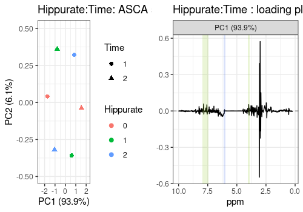
Combination of effects
Hippurate+Time+Hippurate:Time
The scores and the loadings of a combination of effects, in this case
"Hippurate+Time+Hippurate:Time" can also be visualised.
# Hippurate+Time+Hippurate:Time
hiptimInter_scores_pl <- lmpScorePlot(resASCA,
effectNames = "Hippurate+Time+Hippurate:Time",
color = "Hippurate", shape = "Time")
hiptimInter_loadings_pl <- all_loadings_pl$`Hippurate:Time` +
time_peaks + hip_peaks
grid.arrange(hiptimInter_scores_pl,hiptimInter_loadings_pl, ncol=2)
However, note that a better graphical representation is possible with
the function lmpEffectPlot (see Section @ref(effects-plot))
to depict interaction terms or combinations of effects.
Model residuals
PCA on the model residuals can also be applied to spot outliers or an
unexpected underlying structure of the data. The scores plot shows that
the effect of Day, which was excluded in our modeling step,
could have been included as well as it spans the two first PCs of the
residuals.
resid_scores_pl <- lmpScorePlot(resASCA, effectNames = "Residuals",
color = "Day", shape = "Day",
drawShapes = "segment")
resid_loadings_pl <- all_loadings_pl$Residuals
grid.arrange(resid_scores_pl,resid_loadings_pl, ncol=2)
Other graphs
Scores scatter plot
We can also represent the scores as a matrix of plots with
lmpScoreScatterPlotM. This graph has the advantage to
compare more than 2 variables simultaneously. For example, the PC1
scores of Hippurate and Citrate clearly
represent the orthogonal design of this experiment. The interaction
Hippurate:Time can also be clearly represented when
comparing les PC1s of Hippurate and the interaction
term.
lmpScoreScatterPlotM(resASCA,PCdim=c(1,1,1,1,1,1,1,2),
modelAbbrev = TRUE,
varname.colorup = "Citrate",
varname.colordown = "Time",
varname.pchup="Hippurate",
varname.pchdown="Time",
title = "ASCA scores scatterplot matrix")
2D Loadings
Finally the loadings can also be represented 2-by-2 as a scatterplot
with lmpLoading2dPlot. Such graphic is of course of limited
interest for spectral data.
lmpLoading2dPlot(resLmpPcaEffects=resASCA,
effectNames = c("Hippurate"),
axes = c(1,2),
addRownames = TRUE,pl_n = 10)Warning: ggrepel: 1 unlabeled data points (too many overlaps). Consider
increasing max.overlaps
# adding manually labels to points for the Hippurate peaks
labels = substr(colnames(UCH$outcomes),1,4)
labels[-c(369, 132, 150, 133, 149, 144, 145, 368, 151)] <- ""
lmpLoading2dPlot(resLmpPcaEffects=resASCA,
effectNames = c("Hippurate"),
axes = c(1,2), points_labs = labels)Warning: ggrepel: 1 unlabeled data points (too many overlaps). Consider
increasing max.overlaps
Effects plot
The lmpEffectPlot function is particularly interesting
to visualise an interaction term or a combination of effects. Note that
this function can only be applied with the ASCA method.
Main effects for Hippurate
Here the first PC of the Hippurate is represented along
the levels of this effect showing an expected linear effect of Hippurate
dose on the PC value.
lmpEffectPlot(resASCA, effectName = "Hippurate", x = "Hippurate")
Interaction Hippurate:Time
A more interesting application is the visualization of interaction
terms as line plots, here Hippurate:Time along the
Hippurate or the Time effect. This
representation gives the impression of a quite important interaction
effect.
lmpEffectPlot(resASCA, effectName = "Hippurate:Time",
x = "Hippurate", z = "Time")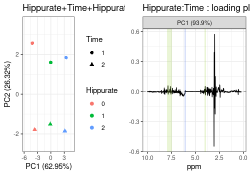
lmpEffectPlot(resASCA, effectName = "Hippurate:Time",
x = "Time", z = "Hippurate")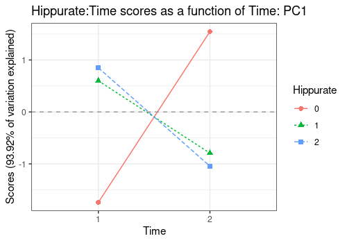
Combination of effects
Hippurate+Time+Hippurate:Time
An alternative visualisation of this interaction combines the main
effects of Hippurate, Time and the interaction
Hippurate:Time. Even if significant, the interaction effect
is actually quite small compared to the main effects
(Hippurate for PC1 and Time for PC2).
lmpEffectPlot(resASCA, effectName = "Hippurate+Time+Hippurate:Time",
x = "Hippurate", z = "Time")
lmpEffectPlot(resASCA, effectName = "Hippurate+Time+Hippurate:Time",
axes = c(2), x = "Time", z = "Hippurate")
APCA
The APCA method performs PCA on the effect matrices augmented by the residuals. The same functions already used for ASCA can be applied.
resAPCA = lmpPcaEffects(resLmpEffectMatrices = resLmpEffectMatrices,
method="APCA")Scores Plot
Different shapes with the drawShapes argument highlight
the data structure recovery.
# Hippurate main effect
lmpScorePlot(resAPCA, effectNames = "Hippurate",
color = "Hippurate", shape = "Hippurate", drawShapes = "ellipse")
# Citrate main effect
lmpScorePlot(resAPCA, effectNames = "Citrate",
color = "Citrate", shape = "Citrate", drawShapes = "ellipse")
# Time main effect
lmpScorePlot(resAPCA, effectNames = "Time",
color = "Time", shape = "Time", drawShapes = "ellipse")
lmpScorePlot(resAPCA, effectNames = "Time",
color = "Time", shape = "Time", drawShapes = "polygon")
lmpScorePlot(resAPCA, effectNames = "Time",
color = "Time", shape = "Time", drawShapes = "segment")
# Interaction term
lmpScorePlot(resAPCA, effectNames = "Hippurate:Time",
color = "Hippurate", shape = "Time", drawShapes = "segment")
lmpScorePlot(resAPCA, effectNames = "Hippurate:Time",
color = "Hippurate", shape = "Time", drawShapes = "polygon")
A scatterplot matrix can also be applied to visualise the relationship between the scores profiles of interest.
lmpScoreScatterPlotM(resAPCA,
effectNames = c("Hippurate", "Citrate", "Time",
"Hippurate:Time"),
modelAbbrev = TRUE,
varname.colorup = "Citrate",
varname.colordown = "Time",
varname.pchup="Hippurate",
varname.pchdown="Time",
title = "APCA scores scatterplot matrix")
Loadings plot
Note that the APCA loadings contain the residuals of the model and differ from the ASCA loadings in that respect.
lmpLoading1dPlot(resAPCA, effectNames = c("Hippurate", "Citrate",
"Time", "Hippurate:Time"), axes = 1)$Hippurate
$Citrate
$Time
$`Hippurate:Time`
ASCA-E
The ASCA-E method performs PCA on the pure effect matrices then projects the effect matrices augmented with residuals on the PC obtained.
resASCAE = lmpPcaEffects(resLmpEffectMatrices = resLmpEffectMatrices,
method="ASCA-E")The contributions and loadings are identical to the ASCA results.
Scores Plot
For the main effects, all score plots show a clear separation between the different levels of the considered effects on the first PC. This separation of the groups suggests a strong effect of those factors, confirmed by their significance.
lmpScorePlot(resASCAE, effectNames = "Hippurate",
color = "Hippurate", shape = "Hippurate")
lmpScorePlot(resASCAE, effectNames = "Citrate",
color = "Citrate", shape = "Citrate")
lmpScorePlot(resASCAE, effectNames = "Time",
color = "Time", shape = "Time")Warning in FUN(X[[i]], ...): The variance of PC2 is inferior to 1%. Graph
scaled
lmpScorePlot(resASCAE, effectNames = "Hippurate:Time",
color = "Hippurate", shape = "Time")
Again, the scores profiles can be compared 2 by 2 with ASCA-E.
lmpScoreScatterPlotM(resASCAE,
effectNames = c("Hippurate", "Citrate", "Time",
"Hippurate:Time"),
modelAbbrev = TRUE,
varname.colorup = "Citrate",
varname.colordown = "Time",
varname.pchup="Hippurate",
varname.pchdown="Time",
title = "ASCA-E scores scatterplot matrix")
sessionInfo
R version 4.3.2 (2023-10-31)
Platform: x86_64-pc-linux-gnu (64-bit)
Running under: Ubuntu 22.04.3 LTS
Matrix products: default
BLAS: /usr/lib/x86_64-linux-gnu/openblas-pthread/libblas.so.3
LAPACK: /usr/lib/x86_64-linux-gnu/openblas-pthread/libopenblasp-r0.3.20.so; LAPACK version 3.10.0
locale:
[1] LC_CTYPE=C.UTF-8 LC_NUMERIC=C LC_TIME=C.UTF-8
[4] LC_COLLATE=C.UTF-8 LC_MONETARY=C.UTF-8 LC_MESSAGES=C.UTF-8
[7] LC_PAPER=C.UTF-8 LC_NAME=C LC_ADDRESS=C
[10] LC_TELEPHONE=C LC_MEASUREMENT=C.UTF-8 LC_IDENTIFICATION=C
time zone: UTC
tzcode source: system (glibc)
attached base packages:
[1] stats graphics grDevices utils datasets methods base
other attached packages:
[1] limpca_0.99.4 gridExtra_2.3 ggplot2_3.4.4 pander_0.6.5
[5] BiocStyle_2.30.0
loaded via a namespace (and not attached):
[1] tidyr_1.3.1 sass_0.4.8 utf8_1.2.4
[4] generics_0.1.3 stringi_1.8.3 digest_0.6.34
[7] magrittr_2.0.3 evaluate_0.23 grid_4.3.2
[10] bookdown_0.37 iterators_1.0.14 fastmap_1.1.1
[13] plyr_1.8.9 foreach_1.5.2 doParallel_1.0.17
[16] jsonlite_1.8.8 ggrepel_0.9.5 tidyverse_2.0.0
[19] BiocManager_1.30.22 purrr_1.0.2 fansi_1.0.6
[22] scales_1.3.0 codetools_0.2-19 textshaping_0.3.7
[25] jquerylib_0.1.4 cli_3.6.2 rlang_1.1.3
[28] munsell_0.5.0 withr_3.0.0 cachem_1.0.8
[31] yaml_2.3.8 parallel_4.3.2 tools_4.3.2
[34] reshape2_1.4.4 memoise_2.0.1 dplyr_1.1.4
[37] colorspace_2.1-0 vctrs_0.6.5 R6_2.5.1
[40] lifecycle_1.0.4 stringr_1.5.1 fs_1.6.3
[43] ragg_1.2.7 pkgconfig_2.0.3 desc_1.4.3
[46] pkgdown_2.0.7 bslib_0.6.1 pillar_1.9.0
[49] gtable_0.3.4 glue_1.7.0 Rcpp_1.0.12
[52] systemfonts_1.0.5 highr_0.10 xfun_0.42
[55] tibble_3.2.1 tidyselect_1.2.0 knitr_1.45
[58] farver_2.1.1 htmltools_0.5.7 labeling_0.4.3
[61] ggsci_3.0.0 rmarkdown_2.25 compiler_4.3.2